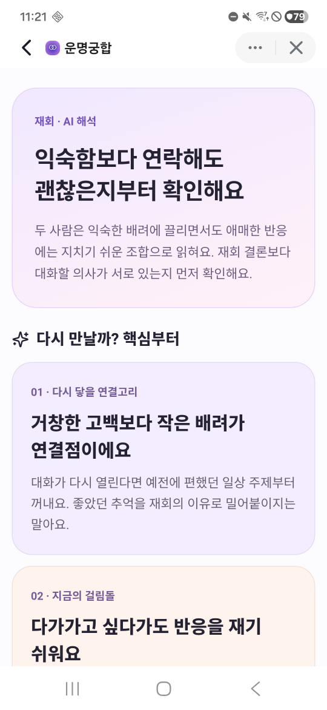

운명궁합 · 관계를 다른 각도로 보고 싶을 때같은 말인데,
같은 말인데,
왜 다르게 들릴까.
연애 사주와 궁합 풀이를 읽으며 대화의 실마리를 찾아보세요. 상대의 마음을 단정하기보다 이야기를 시작하는 참고로.
- 동의와 권한이 있는 정보 입력하기
- 연애 사주 또는 궁합 풀이 읽기
- 핵심 카드와 대화 예시 참고하기
링크가 열리지 않으면 토스 앱에서 운명궁합를 검색해 주세요.
광고·대기 시간 포함. AI가 만든 오락·참고용 해석이며 속마음·미래·재회를 보장하지 않아요.
